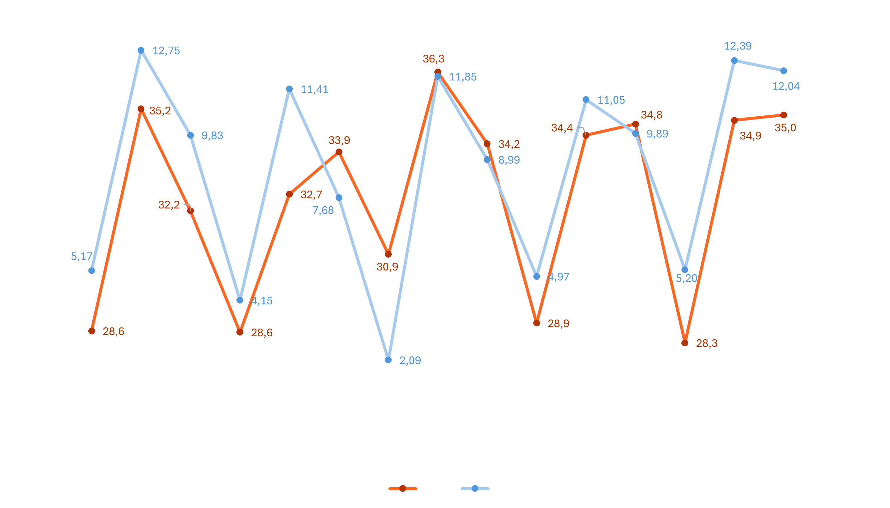

Contexto
Trabajo Fin de Grado centrado en el comportamiento espacial del ozono troposférico en los meses de verano en la Comunidad de Madrid.
En esta página se sintetiza mi Trabajo Fin de Grado, centrado en el análisis del ozono troposférico durante los meses de verano en la Comunidad de Madrid. El objetivo principal es estudiar la distribución espacial de las superaciones del umbral de 120 µg/m³, definido en la normativa de calidad del aire, y explorar su relación con las temperaturas máximas estivales.
Para ello se utilizaron datos de estaciones de calidad del aire de la Comunidad de Madrid, así como datos de temperatura de la AEMET y límites administrativos. A partir de estos datos se generaron distintas superficies interpoladas (kriging) que permiten visualizar los patrones espaciales del contaminante.
- Ámbito de estudio: Comunidad de Madrid.
- Periodo de análisis: meses de verano desde 2020 hasta 2024.
- Variables principales: superaciones del umbral de ozono y temperaturas máximas.
- Principales herramientas utilizadas: ArcGIS Pro, SPSS, Python y desarrollo web GIS con la SDK de ArcGIS.
Visor web del proyecto
Aplicación interactiva para explorar las interpolaciones de ozono y comparar entre años.
El visor permite explorar de forma interactiva los resultados de las interpolaciones de ozono promediados para cada municipio, comparar entre años y superponer la información espacial sobre el territorio de la Comunidad de Madrid.
Resultados principales
Síntesis de los patrones espaciales detectados y de la calidad de las interpolaciones.
La variable de ozono representada ha sido el número de días que se ha superado la máxima diaria de las medias móviles octohorarias (120 μg/m3), promediado en un periodo de tres años el cual es el valor definido por la legislación estatal, la cual permite un máximo de 25 superaciones al año.
Los resultados de las interpolaciones demuestran un inclumplimiento constante de la legislación en varias zonas del territorio madrileño, con una distribución espacial cambiante del contaminante pero siguiendo cierto patrón a lo largo de los años. Este patrón consiste en que los mayores valores se dan en las zonas más rurales de la Comunidad de Madrid, como son las zonas norte y noreste. En caunto a la evolución temporal se puede apreciar un ligero aumento general.
En cuanto a las altas temperaturas y su relación con los valores de ozono, se debe aclarar que la variable usada para este estudio ha sido el promedio de las temperaturas máximas diarias para cada mes (Tm_max) en grados centígrados (ºC), teniendo en cuenta únicamente los meses de verano. Dicho esto, existe una correlación positiva significativa entre ambas variables cuando se promedian los datos de toda la red de calidad del aire, lo que demuestra que a mayor temperatura mayores niveles de ozono. Mediante el siguiente gráfico se puede observar esta tendencia con facilidad:
A modo de síntesis, algunos de los resultados más relevantes son:
- Identificación de zonas con mayor carga de superaciones del umbral, que se mantienen de forma relativamente constante entre los años analizados.
- Diferencias espaciales claras entre áreas urbanas, periurbanas y rurales, tanto en intensidad como en extensión de los valores elevados de ozono.
- Una relación apreciable entre las altas temperaturas y la contaminación por ozono troposférico.
Conclusiones
Integración de análisis espacial, datos ambientales y comunicación a través de un visor web GIS.
El trabajo ha permitido caracterizar de forma espacial el comportamiento del ozono troposférico en la Comunidad de Madrid durante el verano, identificando tanto patrones persistentes como diferencias entre años. El uso de técnicas de interpolación ha permitido representar de forma precisa la distribución del contaminante a partir de los datos puntuales de las estaciones, permitiendo sacar las siguientes conclusiones:
- El ozono presenta una marcada variabilidad espacial, con zonas recurrentes de mayores valores que se asocian a condiciones favorables para su formación y acumulación.
- La comparación entre años muestra que, aunque la magnitud puede variar, las áreas más afectadas tienden a repetirse, lo que indica patrones espaciales relativamente estables.
- La relación entre temperatura y superaciones del umbral refuerza el papel de las condiciones meteorológicas en la dinámica del ozono estival.
- El visor web GIS desarrollado facilita la comunicación de los resultados, permitiendo explorar el territorio y las superficies interpoladas de forma interactiva, más allá del formato clásico de mapas estáticos.
A nivel profesional, con este proyecto he querido mostrar mi capacidad para integrar análisis espacial, tratar datos ambientales y desarrollar herramientas web GIS, todo ello aplicado a un problema actual de calidad del aire.